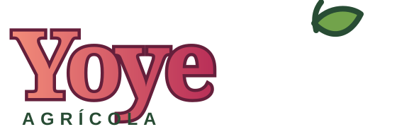

Base central · acceso privadoFundo La Rinconada de Puangue · Melipilla
Gestión técnica del huerto, en un solo lugar.
Consulta fenología, riego, nutrición, diagnóstico y registros compartidos desde cualquier teléfono autorizado.
Operaciones
Dashboards de Rinconada
Accede a controles y registros compartidos con los permisos de Agrícola Yoye.
Registro de calicatas
Formulario móvil, fotografías, historial y tendencias por cuartel.
Abrir calicatasControl de Ácido
Ácido peracético y descole
Abrir dashboardAforo Rinconada
Dashboard principal de riego
Abrir dashboardBase compartida: los cuarteles, riegos y calicatas se guardan en Supabase y se muestran según los permisos de cada trabajador.
Fotografías de referencia con licencia abierta desde Wikimedia Commons; se conservarán localmente antes de producción.